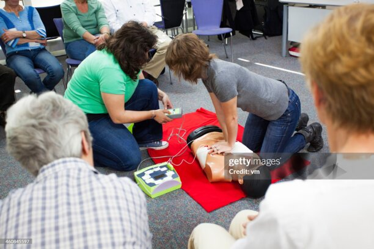

La réanimation est un ensemble de techniques médicales et de soins intensifs visant à maintenir en vie
les patients dont une ou plusieurs fonctions vitales (cœur, respiration, reins) sont brutalement défaillantes.
Elle s'applique aussi aux gestes de premiers secours d'urgence (massage cardiaque) en cas d'arrêt cardio-


La réanimation d'urgence (secourisme) : Ce sont les gestes pratiqués sur le terrain ou en pré-hospitalier,
comme le massage cardiaque et le bouche-à-bouche, pour faire repartir le cœur et la respiration.
Le service de réanimation (milieu hospitalier) : Un service ultra-spécialisé de l'hôpital où des médecins
réanimateurs et des infirmiers surveillent en permanence et suppléent les organes vitaux en attente de guérison.
En milieu hospitalier, les professionnels de santé utilisent des équipements de pointe pour remplacer ou assister les organes :